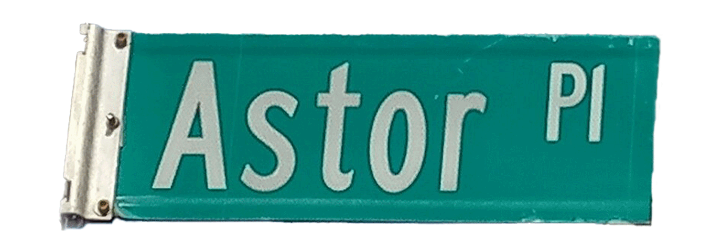
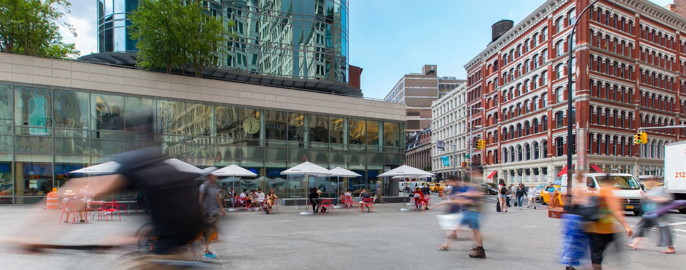
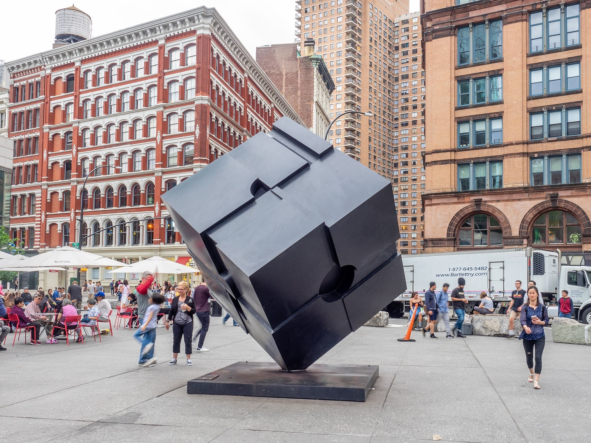
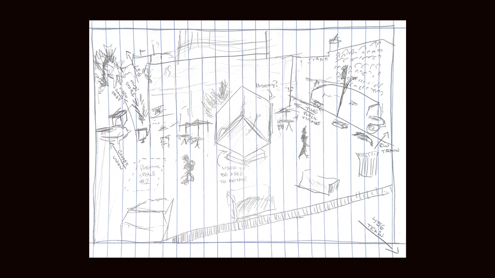
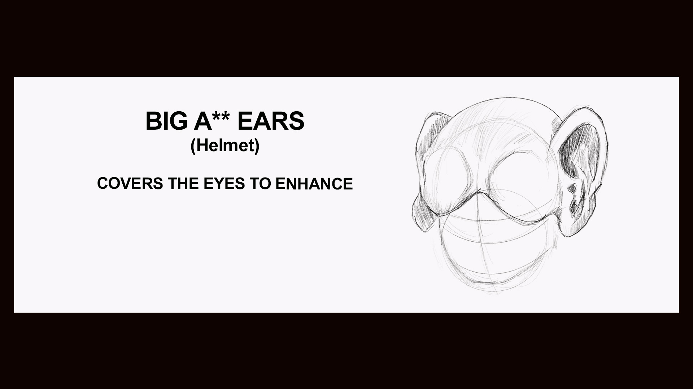
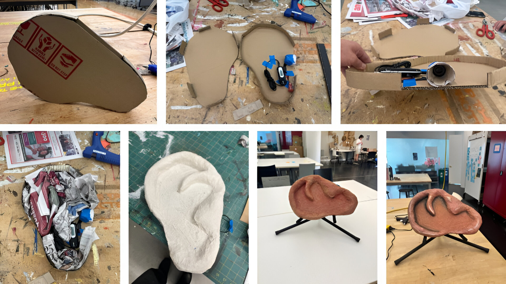
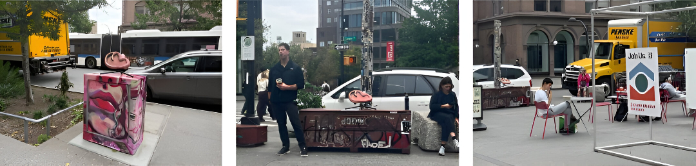

Project – ONE
SEPT 29, 2025

For project one,
A collaborate project, aims to design an intervention in a public space
that encourages strangers to interact without relying on spoken or written language.
Together with my assigned partner, we chose Astor Place as our project location.
FigJam Board

Part One: Research, observations, and documentation
Astor Place is located in the East Village, home to the Cooper Union Foundation Building, the Astor Place Subway
Station, and Tony Rosenthal's "Alamo" cube sculpture.
The street is named for John Jacob Astor,
a fur trader who built much of his fortune from the beaver trade.


Cluster Map: Observations
The intervention is aimed to invite
people to engage with sound in a way
that encourages humor and interaction.
The expected age demographic when visiting the site was 25 and
under as well as over 50 years old.

Sketch: Observations

Project - Day One: Sketch of observations
Potential Areas of Public Engagement
- North East Corner (Astor and Cooper)
- North Island
- Cooper Square (South Side of Astor Place)
- Astor place Station
- seating area by the Alamo Cube
Initial intervention

Project - One: Initial ideal sketch

Project - One: Initial sketches
A wearable helmet constructed from layered cardboard and finished with a
paper-mâché surface. embedded headset within the helmet will play recorded sound to resonate from inside the form.
The goal is invite
people to engage with sound in a way
that encourages humor and interaction.
-------
Progress

The initial idea of building a dome to produce sounds did not work, as the Arduino and circuitry failed. I realized that we could still achieve the same outcome by using a ready-made device, such as an MP3 player, and encasing it in a new form.
In the end, we used cardboard, a small speaker, an old aux cord, and an MP3 player to construct a kind of improvised earphone.
Final Reflection
The iteration process was the most challenging part of Project 1: Instruction Sets for Strangers. Most of our time was spent on sketches and physical
fabrication. Working in pairs also felt like a setback at times. Our initial concept involved an intervention with sound, which we approached with a
comedic approach. This led to the design of a large, cartoonish ear that plays audio—specifically, an on loop track of Peanuts "adult gibberish."
Our goal was to create a space for community interaction through comedy and laughter. To achieve this, we structured our approach around the 5 E’s
of the User Journey model: Enter, Engage, Exit, Extend, and Entice. This framework guided us through the design process and helped us solidify our final iteration.
The final piece was constructed using cardboard, glue, newspaper, plaster strips, acrylic paint, and an MP3 player—encased in a sculptural form resembling an ear.
On the day of the installation, we tested three different locations around our site. Each spot yielded varying levels of engagement, with our final choice, our intended
location, generating the most interaction. Overall, the intervention was successful in achieving our desired level of engagement on-site.
